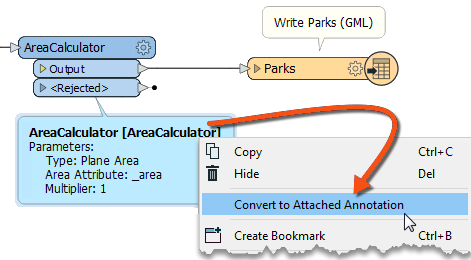

After completing this lesson, you’ll be able to:
Annotation is a crucial method for a clear and understandable design.
Annotation helps other users understand what is supposed to be happening in the translation and helps the creator when returning to a workspace after a long interval (take it from me that this is especially important!)
You can apply two different types of annotation to a workspace.
User annotation is a comment created by the user. It can be connected to a workspace object (transformer or feature type), connected to a workspace connection, or can float freely within the workspace.
To create an attached user annotation, right-click a workspace object and select Add Annotation, or use the shortcut Ctrl+K when the object is selected.
To create floating user annotation, right-click the canvas, select Insert Annotation, or press Ctrl+K when nothing is selected.
When you place an annotation, you can change the font style, font size, and background color; you can also add hyperlinks, bullet points, and tables.

You might ask: "Why would I use annotation when I can just rename my transformers to make their function more explicit?" This is a good question! Some FME users like to rename transformers to describe what they are doing. However, we've seen some problems with this approach. First, it's hard to fit enough description in a short name. Second, other users (or yourself in the future) will have no idea what the original transformer was and will likely have to open it to see how it is configured. Ultimately, we find this method saves little time, but you can decide for yourself.
Summary annotation is an FME-generated comment providing information about any workspace object. This item can be a source or destination feature type or a transformer.
Summary annotation is permanently colored blue to distinguish it from other annotations. It's always connected to the item it relates to and cannot be detached.

The nice thing about Summary Annotation is that it automatically updates in response to changes. That makes it very useful for checking transformer parameters (or reader/writer schemas) at a glance. It's beneficial when the parameters are set through a wizard and are more awkward to check (for example, the SchemaMapper or FMEServerJobSubmitter transformers).
It's a good idea to use summary annotation to show your actions and user annotation to clarify why you are taking these actions. A good example is when you are not using default values for a transformer or feature type.
You can convert a summary annotation to a user annotation by using this context menu option:

This method allows you to extract the information from a summary annotation but edit it as you would a user annotation. Note, however, that a converted summary annotation no longer updates automatically!